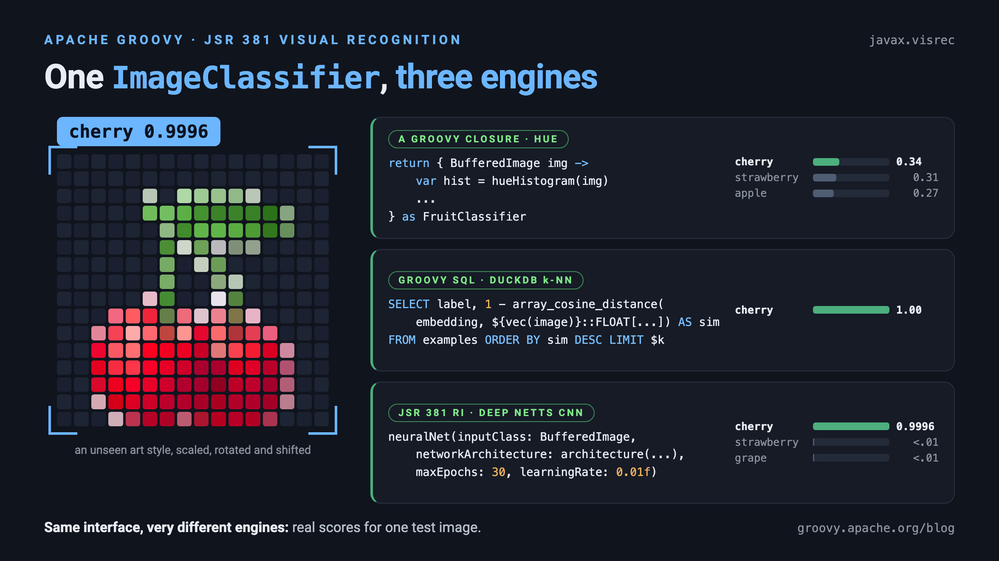
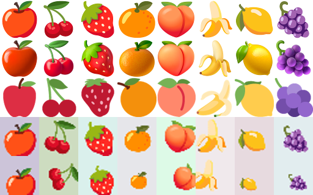

Fruity Visual Recognition with Groovy® and JSR 381

Published: 2026-11-27 08:00AM
Introduction
JSR 381 gives Java a standard interface for image classifiers. In this post we put three very different engines behind that one interface, a Groovy closure, a nearest-neighbour search in DuckDB and a convolutional neural network, and see which of them can tell an apple from a cherry.

JSR 381, the Visual Recognition (VisRec) Specification,
reached Final Release in February 2022. It defines a small API for classifying images (and other
data) that different machine learning engines can implement.
An earlier post, Classifying Iris Flowers with Deep Learning,
used the Deep Netts implementation of JSR 381 on tabular data.
Geertjan’s recent foojay article
JSR 381: Java Visual Recognition API
looked at the image side of the API from Java. It trained the reference implementation and
then wrote a second ImageClassifier of its own: images shrunk to 8x8 pixels, stored in
DuckDB, and classified by a nearest-neighbour vote.
This post takes up that idea of swapping engines behind one interface. Instead of cats and dogs, or sunsets and forests, we’ll use fruit, as in our earlier Fruity Eclipse Collections post. Groovy makes each engine short enough that we can afford to compare three of them.
All the code is in the groovy-visrec repo.
The JSR 381 API in brief
The core interface is tiny:
public interface Classifier<T, R> {
R classify(T input) throws ClassificationException;
}ImageClassifier<IMAGE_CLASS> extends it with a result type of Map<String, Float>
(label to confidence) and adds two convenience overloads, classify(Path) and classify(InputStream).
For neural networks there is also a builder, NeuralNetImageClassifier.builder(), which finds an
implementation using the Java ServiceLoader. The reference implementation is backed by Deep Netts.
The data
We’ll use eight fruit: 🍎 🍒 🍓 🍊 🍑 🍌 🍋 🍇. The first six are the ones from the earlier fruity posts. Strawberry and lemon join them because they look a lot like the apple and the banana. Each fruit comes in three emoji art styles, which form the first three rows of the image below: Noto Color Emoji in its 2D and 3D variants, and Twemoji.

One image per fruit per style isn’t much of a training set, so we make more. Each copy gets a random pale background, a rotation, a zoom and a shift. The last two rows of the image above show one example each of the two levels used later, easy and hard:
static final Map<String, Map<String, Range<BigDecimal>>> LEVELS = [
easy: [rotate: -30..30, scale: 0.7..1.0, shift: -0.1..0.1],
hard: [rotate: -90..90, scale: 0.4..1.0, shift: -0.25..0.25]
]
static List<Example> augmented(String style, int perFruit, long seed, String level = 'easy') {
var rnd = new Random(seed)
Closure<Double> between = { double lo, double hi -> lo + rnd.nextDouble() * (hi - lo) }
Closure<Double> pick = { Range r -> between(r.from, r.to) }
var aug = LEVELS[level]
Fruit.values().collectMany { fruit ->
var src = source(style, fruit)
(1..perFruit).collect {
var tint = Color.getHSBColor(rnd.nextFloat(), between(0, 0.15) as float, between(0.85, 1) as float)
var img = src.transform(size: SIZE, background: tint,
rotate: pick(aug.rotate), scale: pick(aug.scale),
dx: pick(aug.shift), dy: pick(aug.shift))
new Example(fruit, style, img)
}
}
}transform isn’t a JDK method on BufferedImage. It’s one of a handful of
extension methods
in the repo, which make images feel like Groovy collections. For example, img[x, y] returns a pixel’s
Color, and img.pixels returns them all:
static Color getAt(BufferedImage self, List<Integer> xy) {
new Color(self.getRGB(xy[0], xy[1]), true)
}
static List<Color> getPixels(BufferedImage self) {
(0..<self.height).collectMany { y -> (0..<self.width).collect { x -> self[x, y] } }
}We train on 60 augmented copies of each fruit in two of the styles, and test on 20 fresh copies (different random seeds) from both the same two styles and the third, unseen style.
Engine 1: a closure is a classifier
ImageClassifier has three abstract methods, but two of them just load an image and call the first.
A Groovy trait can supply those two, leaving a single abstract method:
trait FruitClassifier implements ImageClassifier<BufferedImage> {
Map<String, Float> classify(Path path) { classify(ImageIO.read(path.toFile())) }
Map<String, Float> classify(InputStream input) { classify(ImageIO.read(input)) }
}Groovy can coerce a closure to any interface or trait with one abstract method. So any closure taking
a BufferedImage is now a complete JSR 381 classifier.
For our first engine, we’ll use colour alone. We build a 12-bin hue histogram of the pixels that differ from
the background (the background colour is taken from the corner pixel, self[0, 0]), average the histograms of
each fruit’s training images, and pick the fruit whose average is closest:
static FruitClassifier hue(List<Example> training) {
Map<Fruit, double[]> centroids = training.groupBy { it.fruit }.collectEntries { fruit, examples ->
var hists = examples.collect { hueHistogram(it.image) }
[fruit, (0..<BINS).collect { i -> hists.sum { it[i] } / hists.size() } as double[]]
}
return { BufferedImage img ->
var hist = hueHistogram(img)
var sims = centroids.collectEntries { fruit, c -> [fruit.label, Math.max(cosine(hist, c), 0)] }
double total = sims.values().sum()
sims.collectEntries { label, sim -> [label, (sim / total) as float] }
.sort { -it.value }
} as FruitClassifier
}The fruity Eclipse Collections post found that fruit emoji are mostly the colour you’d expect. We’ll see shortly how far that gets us.
Engine 2: nearest neighbours in DuckDB
The second engine follows the foojay article. Each image is shrunk to 8x8 pixels, giving a vector of 192 RGB values (an embedding), which is another extension method:
static float[] embedding(BufferedImage self, int size = 8) {
self.scaled(size).pixels.collectMany { c -> [c.red, c.green, c.blue].collect { it / 255f } } as float[]
}Training stores the embeddings in an in-memory DuckDB table. Classifying finds the five stored images most similar to the new one (by cosine similarity) and lets them vote, weighted by similarity. With Groovy SQL, both the nearest-neighbour search and the vote are one query, and the GString placeholders become JDBC bind parameters:
class DuckDbFruitClassifier implements FruitClassifier, AutoCloseable {
private final Sql sql = Sql.newInstance('jdbc:duckdb:')
private final Function<BufferedImage, float[]> embedder
private final int dims, k
DuckDbFruitClassifier(int dims, int k = 5, Function<BufferedImage, float[]> embedder) {
this.dims = dims
this.k = k
this.embedder = embedder
sql.execute "CREATE TABLE examples(label VARCHAR, embedding FLOAT[$dims])".toString()
}
private vec(BufferedImage image) {
sql.connection.createArrayOf('FLOAT', embedder.apply(image) as Float[])
}
void learn(List<Example> examples) {
sql.withBatch(100, 'INSERT INTO examples VALUES (?, ?)') { ps ->
examples.each { ps.addBatch(it.fruit.label, vec(it.image)) }
}
}
Map<String, Float> classify(BufferedImage image) {
sql.rows("""
WITH nearest AS (
SELECT label, 1 - array_cosine_distance(embedding, ${vec(image)}::FLOAT[${Sql.expand(dims)}]) AS sim
FROM examples ORDER BY sim DESC LIMIT $k
)
SELECT label, sum(sim) / (SELECT sum(sim) FROM nearest) AS score
FROM nearest GROUP BY label ORDER BY score DESC
""").collectEntries { [it.label, it.score as float] }
}
void close() { sql.close() }
}The array size can’t be a bind parameter, so Sql.expand writes it into the SQL text instead.
The embedder is passed in as a function, so the same class would work with any other way of
turning images into vectors.
If you’ve read Using the Oracle 23ai Vector data type with Groovy,
this will look familiar: there the nearest-neighbour vote over Iris measurements ran in Oracle using
vector_distance(features, $features, EUCLIDEAN). DuckDB’s array_cosine_distance is the same measure as
Oracle’s COSINE option (one minus the cosine similarity). Here it works on fixed-size FLOAT[n] arrays
rather than a dedicated VECTOR type.
Engine 3: a convolutional neural network
The third engine is the JSR 381 reference implementation, which trains a Deep Netts convolutional
neural network. It reads its network architecture from a JSON file, which we write with JsonBuilder:
static File architecture(File dir, int size, int classes) {
new File(dir, 'fruit_arch.json').tap {
text = new JsonBuilder(
networkType: 'CONVOLUTIONAL',
lossFunction: 'CROSS_ENTROPY',
layers: [
[layerType: 'INPUT', width: size, height: size, channels: 3],
[layerType: 'CONVOLUTIONAL', filterWidth: 3, filterHeight: 3, channels: 8, stride: 1, activation: 'RELU'],
[layerType: 'MAXPOOLING', filterWidth: 2, filterHeight: 2, stride: 2],
[layerType: 'CONVOLUTIONAL', filterWidth: 3, filterHeight: 3, channels: 16, stride: 1, activation: 'RELU'],
[layerType: 'MAXPOOLING', filterWidth: 2, filterHeight: 2, stride: 2],
[layerType: 'FULLY_CONNECTED', width: 32, activation: 'RELU'],
[layerType: 'OUTPUT', width: classes, activation: 'SOFTMAX']
]
).toPrettyString()
}
}The builder takes options like imageWidth(32) and maxEpochs(30). It’s tempting to configure it
inside Groovy’s with { }, but there’s a catch: inputClass(…) returns a new builder, so any options
set on the original one are silently lost. Instead, we pass the options as a map and fold them
into the builder with inject, which always carries forward whatever builder the previous call returned:
static ImageClassifier<BufferedImage> neuralNet(Map options) {
options.inject(NeuralNetImageClassifier.builder()) { builder, option, value ->
builder."$option"(value)
}.build()
}
static ImageClassifier<BufferedImage> cnn(List<Example> training, int epochs = 30) {
var dir = new File('build/dataset/train')
var index = Dataset.writeIndex(training, dir)
neuralNet(
inputClass: BufferedImage,
imageWidth: Dataset.SIZE,
imageHeight: Dataset.SIZE,
labelsFile: Path.of(dir.path, 'labels.txt'),
trainingFile: index.toPath(),
networkArchitecture: architecture(dir, Dataset.SIZE, Fruit.values().size()).toPath(),
exportModel: Path.of('build/fruit.dnet'),
maxError: 0.02f,
maxEpochs: epochs,
learningRate: 0.01f
)
}The reference implementation reads its training images from disk, so writeIndex saves them
as PNG files along with an index file of path label lines.
Comparing the engines with GINQ
All three engines are now just ImageClassifier instances, so a single evaluation loop handles them all,
recording a Prediction for every test image:
record Prediction(String classifier, String test, Fruit actual, Fruit predicted, float score) {
boolean isCorrect() { actual == predicted }
}
List<Prediction> predictions = factories.collectMany { name, factory ->
var classifier = factory()
tests.collectMany { test, examples ->
examples.collect { ex ->
var best = classifier.classify(ex.image).max { it.value }
new Prediction(name, test, ex.fruit, Fruit.of(best.key), best.value)
}
}
}GINQ then summarises the results:
println GQ {
from p in predictions
groupby p.classifier, p.test
orderby p.classifier, p.test
select p.classifier, p.test, count() as n, Math.round(avg(p.correct ? 100 : 0)) as accuracy
}Training on augmented Noto 2D and Twemoji images, and testing on those styles plus Noto 3D, gives:
+------------+--------------+-----+----------+
| classifier | test | n | accuracy |
+------------+--------------+-----+----------+
| cnn | seen styles | 320 | 100 |
| cnn | unseen style | 160 | 99 |
| hue | seen styles | 320 | 68 |
| hue | unseen style | 160 | 88 |
| pixel | seen styles | 320 | 96 |
| pixel | unseen style | 160 | 96 |
+------------+--------------+-----+----------+Another GINQ query lists the most common mistakes:
println GQ {
from p in predictions
where !p.correct
groupby p.classifier, p.actual, p.predicted
orderby count() in desc
limit 8
select p.classifier, "$p.actual → $p.predicted" as mistake, count() as n
}+------------+---------+----+
| classifier | mistake | n |
+------------+---------+----+
| hue | 🍎 → 🍑 | 40 |
| hue | 🍎 → 🍒 | 20 |
| hue | 🍓 → 🍒 | 20 |
| hue | 🍓 → 🍑 | 20 |
| hue | 🍊 → 🍌 | 19 |
| pixel | 🍎 → 🍑 | 5 |
| pixel | 🍓 → 🍎 | 4 |
| hue | 🍋 → 🍊 | 2 |
+------------+---------+----+Colour alone mixes up the red fruit, and the orange and the banana, much as the fruity Eclipse Collections post would lead us to expect. It didn’t classify a single apple correctly: each one came out as a peach or a cherry.
Making it harder
Here are the accuracy figures (%) from three setups: the two choices of unseen style with easy augmentation, and hard augmentation:
| Experiment | Colour | Pixel k-NN | CNN |
|---|---|---|---|
Easy augmentation, unseen style Noto 3D |
88 |
96 |
99 |
Easy augmentation, unseen style Twemoji |
30 |
82 |
88 |
Hard augmentation, seen styles |
69 |
60 |
90 |
Hard augmentation, unseen style Noto 3D |
87 |
60 |
84 |
The foojay article says the 8x8 pixel embedding isn’t suited to telling apart shapes, like cats and dogs. With easy augmentation, though, it scores 96%: each emoji design is always drawn the same way, so the tiny thumbnails differ little between copies. With hard augmentation, the fruit move around, change size and turn sideways, and the pixel engine drops to 60%. The CNN holds up much better (90%), since its convolution and pooling layers respond to local patterns wherever they appear in the image. It needed 50 training epochs rather than 30 to get there.
Colour behaves in the opposite way. A hue histogram doesn’t care where the fruit is or which way up it is, so the hard augmentation barely affects it, and on the hard unseen Noto 3D test it even edges out the CNN. But Twemoji uses a different palette, and colour drops to 30% when that style is held out.
Changing art style hurts every engine. The CNN’s one consistent failure with Twemoji held out is the strawberry, which it calls an apple in 17 of 20 cases:
cnn / unseen style
🍎 🍒 🍓 🍊 🍑 🍌 🍋 🍇
🍎 19 . . . . . . 1
🍒 . 20 . . . . . .
🍓 17 . 2 . . . . 1
🍊 . . . 20 . . . .
🍑 . . . . 20 . . .
🍌 . . . . . 20 . .
🍋 . . . . . . 20 .
🍇 . . . . . . . 20Looking at the third row of the image at the top, the Twemoji strawberry is a plain red shape with a green top, not so far from the Noto apples the CNN was trained on.
Things to know
A few things to be aware of if you try this yourself:
-
The reference implementation,
javax.visrec:visrec-ri:1.0.3, depends on Deep Netts 1.13.2, which in turn brings in log4j 2.7. That version is affected by CVE-2021-44228, so the repo’s build forces a current log4j. -
The reference implementation and Deep Netts are GPL-licensed with the Classpath Exception.
-
The builder needs a
networkArchitectureJSON file, in addition to the options shown in most examples. -
The DuckDB JDBC driver doesn’t accept a Java
float[]as a parameter.Connection.createArrayOfworks. -
The accuracy query above needs Groovy 6.0.1 or later. In Groovy 6.0.0, giving a GINQ alias to a method call that involves an aggregate, such as
Math.round(avg(n)) as mean, fails to compile (GROOVY-12833). On 6.0.0, a cast,(avg(n) as int) as mean, works instead.
Conclusion
JSR 381 keeps the classifier interface small, and Groovy makes it cheap to put something behind it: a closure, a SQL query, or a neural network configured from a map. That made it easy to compare the three and to learn something about each: colour is robust to position but not to style, pixel thumbnails are better than their reputation when images are consistent, and a small CNN handles the harder cases best.
Further information
-
JSR 381: Java Visual Recognition API on foojay
-
JavaVisRec on GitHub: the API, reference implementation and examples
-
groovy-visrec companion repo
-
Classifying Iris Flowers with Deep Learning, Groovy and GraalVM
-
Using the Oracle 23ai Vector data type with Groovy to classify Iris flowers
Emoji images: Noto Emoji (Apache License 2.0) and Twemoji (graphics licensed under CC-BY 4.0).